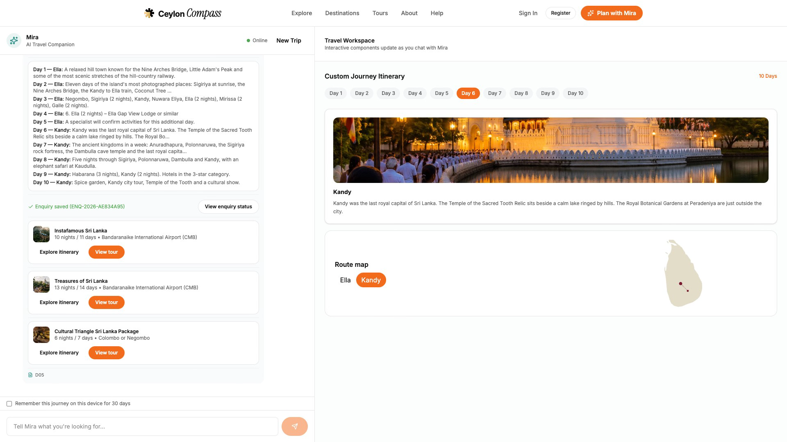

07 · Custom Journey Planning
Mira — Product Experience & Workflow Guide
Grounded Multi-Day Itineraries Without Invented Custom Prices
Verified Scene 02 workflow: "Design a 10-day custom journey across Kandy and Ella for a family of four" generates 10 grounded days, interactive map pins, destination photos, published alternatives, and a specialist enquiry—before transitioning seamlessly to a verified T09 package quote.

Custom Plan & Interactive Map (
02-journey.png): 10 structured days across Ella and Kandy, destination photographs, clickable RouteMap pins, 3 published tour cards (T10, T12, T09), and saved enquiry ENQ-2026-AE834A95 with zero invented prices.
Seamless Package Quotation (
02-verified.png): Switching to "Cultural Triangle Sri Lanka Package for 2 adults on 3 May 2027" synchronizes the workspace to USD 2,125 total (USD 532 deposit) under ENQ-2026-37C9649F.
Why Custom Pricing Is Never Invented: The rate workbook contracts fixed tours and hotel schedules. Because a bespoke 10-day route lacks contracted hotel nights and entrance bundles, Mira strictly emits EnquiryNotice(SPECIALIST_HANDOFF) and recommends published tours covering the same destinations.